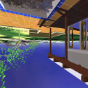
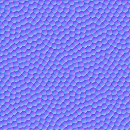
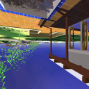
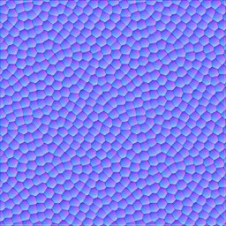

Environment and Bump Mapping
 



Most of the functionality is implemented in th fragment shader. The vertex shader is mainly responsible for calculating the final positions of the vertices (based on the projection and Model-View matrix) and transforming the clip coordinates of the background quad to world coordinates.
In the case of mirror sphere, the fragment shader retrieves the perturbed surface normal (used to emulate bumps) using normal map/texture and proceeds to calculate the reflective direction vector. The reflective direction vector coordinates are then used to retrieve color information from the cube texture representing the environment.